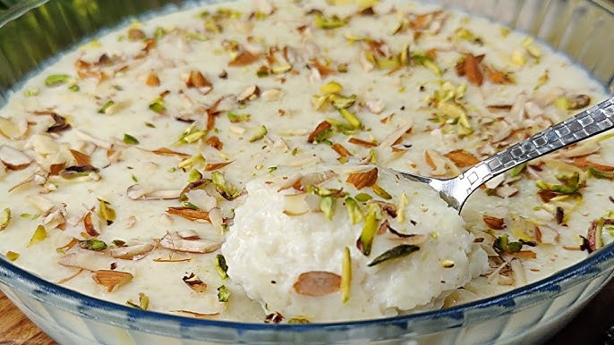

Kheer

Description
Kheer, also known as payasam or payesh,
is a pudding or porridge popular in the Indian subcontinent,
usually made by boiling milk, sugar or jaggery, and rice.
It can be additionally flavoured with dried fruits, nuts, cardamom and saffron.
Instead of rice, it may contain cracked wheat, vermicelli, sago or tapioca.
Ingredients
- Rice
- Milk
- Sugar
- Almond
- Saffron
- Cardamom
- COndensed Milk
Steps
- Rinse 1/4 cup of rice a couple of time in fresh water and soak in enough water
for 15 to 20 minutes.
- Take 1 liter full fat milk in a heavy wide pan on low to medium-low heat. Stir at intervals
so the milk at the bottom does not get burnt.
- Let the milk come to a boil. Drain all the rice and add it to the boiling milk.
- Cook the rice grain until they are half done
- Add Sugar in the mixture and mix well
- Simmer till rice grains are almost cooked
- Use topping of your choice for finishing